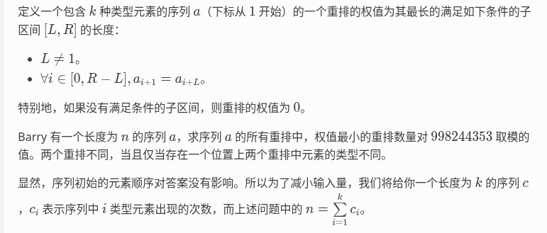

【LGR-310-Div.2】洛谷 9 月月赛 II &「DBOI」Round 6 C 题。

1≤T≤5，1≤k≤2×105，1≤ci≤107，1≤n≤107
其实我赛时没想错，但是我不爱动笔，这是错的，就当吃个教训。
这题，首先先给 ci 排个序，好看。
显然可以发现 “权值最小” 只有三种情况：
-
当 k=1 时，即只有一种字符，权值为 n−1，答案为 1。
-
当 ∃ci=1，把这种字符放到开头即可，权值为 0。
这种情况下，答案的组成是
ans=∑[ci=1]×∏ci!An−1n−1
-
当 ∀ci,ci>2 时，
如果存在开头的两个字符为 AB，保证后面 n−2 位不存在 AB 时，那么答案就是 1
如何证明这种情况一定存在？首先选择两个不同的字符
然后只需要将剩余的 A 和 B 保证 B 一定在 A 的前面即可。
（这里不选择相同的字符的原因是，难以通过单纯的规定谁先谁后来避免后面出现重复0）
所以对于情况 3，一定存在合法的排列使得答案为 1。
不妨考虑答案为 1 时，前两位的字符情况具体是什么，并且保证 “不存在 ??” 这一具体条件，考虑贡献是多少。
因此定义：G(i,j) 为选择前两位分别为 i，j 字符，贡献的值
那么前两位字符的搭配共有两种情况。
1.当 i=j 时
此时考虑选择两个相同的字符放在开头。
那么在后面的 n−2 个点中，剩余的字符 i 的个数是 ci−2。
由上，因为不存在 ii，
所以我们需要将这些字符 i 不相邻地塞在剩余 n−2−(ci−2)=n−ci 个点中间，
那这个问题怎么做？
插板法里面，“板”是不能相邻的。
因此我们可以考虑把 ci−2 个字符作为板插在 n−ci 里面。
注意考虑一下开头也是不能放的，因此其实可选的空的数量是 n−ci 而不是 n−ci+1。
如图所示：

接着，其他非 i 的 n−ci 个点，全排列后，对于每一个 j=i，会单独重复排列 cj!，需要去除

因此此时答案
G(i,i)=Cn−cici−2×i=j∏cj!An−cin−ci=Cn−cici−2×i=j∏cj!(n−ci)!
2. 当 i=j 时
此时考虑选择两个不同的字符放在开头。
此时在后面的 n−2 个点中，剩余的字符 i 的个数是 ci−1，剩余的字符 j 的个数是 cj−1。
怎么处理 “一个 ij 不取” 这个东西，正着做看起来非常难（如果说用 dp 没什么优化前途，对吧）
因此就要用到容斥了。
那么考虑，能取到的 ij 对最大是
min(ci−1,cj−1)
当我取了 cnt 对 ij 时：
同样的，我们也是将 cnt 个点塞进 个其他点里面

但这里与之前不同的是，ij 对之间可以相邻，其他点之间也可以相邻。
因此如果不考虑 ij 对之间，其他点之间的顺序，相当于这 n−2−cnt 点全排列，再除以单独排列的重复情况
所以排列的数目即为
Acntcnt⋅An−2−2cntn−2−2cntAn−2−cntn−2−cnt
接着考虑 n−2−2⋅cnt 内部排列情况
仍然的，一个 An−2−2cntn−2−2cnt 起手后，剔除每种元素内部的 cj!。
但是这里由于有 不在 ij 对里面的 i 和 j，而这个玩意的排列也是需要去除掉的

所以还要乘
Aci−1−cntci−1−cnt⋅Acj−1−cntcj−1−cnt⋅p=i,j∏cp!An−2−2cntn−2−2cnt
对于总的可能答案，也是同样的，除开每一个里面的排列，总共有：
Aci−1ci−1⋅Acj−1cj−1⋅p=i,j∏cp!An−2n−2
因此此时答案
G(i,j) = Aci−1ci−1⋅Acj−1cj−1⋅p=i,j∏cp!An−2n−2− cnt=1∑min(ci−1,cj−1)(−1)cnt−1× Acntcnt⋅An−2−2cntn−2−2cntAn−2−cntn−2−cnt× Aci−1−cntci−1−cnt⋅Acj−1−cntcj−1−cnt⋅p=i,j∏cp!An−2−2cntn−2−2cnt=Aci−1ci−1⋅Acj−1cj−1⋅p=i,j∏cp!An−2n−2− cnt=1∑min(ci−1,cj−1)(−1)cnt−1× Acntcnt⋅Aci−1−cntci−1−cnt⋅Acj−1−cntcj−1−cnt⋅p=i,j∏cp!An−2−cntn−2−cnt=cnt=0∑min(ci−1,cj−1)(−1)cnt× Acntcnt⋅Aci−1−cntci−1−cnt⋅Acj−1−cntcj−1−cnt⋅p=i,j∏cp!An−2−cntn−2−cnt=cnt=0∑min(ci−1,cj−1)(−1)cnt× cnt!⋅(ci−1−cnt)!⋅(cj−1−cnt)!⋅p=i,j∏cp!(n−2−cnt)!
接下来就来到酣畅淋漓的推式子时间了
考虑总答案
ans=i∑G(i,i)+i=j∑G(i,j)=i∑Cn−cici−2×i=j∏cj!(n−ci)!+ i=j∑cnt=0∑min(ci−1,cj−1)(−1)cnt× cnt!⋅(ci−1−cnt)!⋅(cj−1−cnt)!⋅p=i,j∏cp!(n−2−cnt)!=i∑Cn−cici−2×j∏cj!(n−ci)!ci!+ i=j∑cnt=0∑min(ci−1,cj−1)(−1)cnt× cnt!⋅(ci−1−cnt)!⋅(cj−1−cnt)!⋅p∏cp!(n−2−cnt)!ci!cj!=p∏cp!1⋅[i∑Cn−cici−2×(n−ci)!ci!+ i=j∑cnt=0∑min(ci−1,cj−1)(−1)cnt× cnt!⋅(ci−1−cnt)!⋅(cj−1−cnt)!(n−2−cnt)!ci!cj!]=p∏cp!1⋅[i∑Cn−cici−2×(n−ci)!ci!+ cnt=0∑i=j∑(−1)cnt× cnt!⋅(ci−1−cnt)!⋅(cj−1−cnt)!(n−2−cnt)!ci!cj!]=p∏cp!1⋅[i∑Cn−cici−2×(n−ci)!ci!+ cnt=0∑i=j∑(−1)cnt× cnt!(n−2−cnt)!⋅(ci−1−cnt)!ci!⋅(cj−1−cnt)!cj!]
不妨令 F(i,cnt)=(ci−1−cnt)!ci!
所以
=p∏cp!1⋅[i∑Cn−cici−2×(n−ci)!ci!+ cnt=0∑(−1)cnt× cnt!(n−2−cnt)!⋅i=j∑F(i,cnt)⋅F(j,cnt)]
怎么考虑算后面的这个，我们可以和平方减一下平方和即可
所以
=p∏cp!1⋅[i∑Cn−cici−2×(n−ci)!ci!+ cnt=0∑(−1)cnt× cnt!(n−2−cnt)!⋅[(i∑F(i,cnt))2−i∑F(i,cnt)2]]
此时我们发现一个性质，由于对 F(i,cnt) 只有在 ci−1−cnt≥0 即 cnt<ci 下才不为 0
所以对于每一个 i 来说，其“最远”的 cnt 与 ci 是相关的
因此不妨考虑维护 SAcnt 与 SBcnt，遍历所有不为零的 F(i,cnt) 情况，加到 SA / SB 里面
这样的复杂度是 O(∑ci)=O(n) 的，可以接受
所以
ans=p∏cp!1⋅[i∑Cn−cici−2×(n−ci)!ci!+ cnt=0∑(−1)cnt× cnt!(n−2−cnt)!⋅[SAcnt−SBcnt]]
这样就舒服很多了
Code:
1
2
3
4
5
6
7
8
9
10
11
12
13
14
15
16
17
18
19
20
21
22
23
24
25
26
27
28
29
30
31
32
33
34
35
36
37
38
39
40
41
42
43
44
45
46
47
48
49
50
51
52
53
54
55
56
57
58
59
60
61
62
63
64
65
66
67
68
69
70
71
72
73
74
75
76
77
78
79
80
81
82
83
84
85
86
87
88
89
90
91
92
93
94
95
96
97
98
99
100
101
102
103
104
105
106
107
108
109
110
111
112
113
114
115
116
117
118
119
120
121
122
123
124
125
126
127
128
129
130
131
132
133
134
135
136
137
138
139
140
141
142
143
144
145
146
147
148
149
150
151
152
153
154
155
156
157
158
159
160
161
162
163
164
165
166
167
168
169
170
171
172
173
174
175
176
177
178
179
180
181
182
183
184
185
186
187
188
189
190
191
192
193
194
195
196
197
198
199
200
201
202
203
204
205
206
207
208
209
210
211
212
213
214
215
216
217
218
219
220
221
222
223
224
225
226
227
228
229
230
231
232
233
234
235
236
237
| #define fastio ios::sync_with_stdio(0);cin.tie(0);
#define P 998244353ll
#include<bits/stdc++.h>
using namespace std;
typedef long long ll;
const int maxk=2e5+35;
const int maxn=1e7+35;
const ll inf=1e18;
ll Fac[maxn];
ll Facinv[maxn];
ll saved_inv[maxn];
void mp(ll &x){x%=P;}
ll kuaisumi(ll x,ll y){
ll res=1;
while(y){
if(y&1) res=(res*x)%P;
x=(x*x)%P;
y>>=1;
}
return res%P;
}
ll inv(ll x){
if(x<maxn&&saved_inv[x]!=-1) return saved_inv[x];
return kuaisumi(x,P-2)%P;
}
namespace PREP{
void calc_fac(){
Fac[0]=1;
for(int i=1;i<maxn;++i){
Fac[i]=Fac[i-1]*i%P;
}
}
void calc_inv(){
for(int i=0;i<maxn;++i){
saved_inv[i]=-1;
}
}
void calc_facinv(){
Facinv[maxn-1]=inv(Fac[maxn-1]);
for(int i=maxn-2;i>=0;--i){
Facinv[i]=Facinv[i+1]*(i+1)%P;
if(Fac[i]<maxn) saved_inv[Fac[i]]=Facinv[i];
}
}
void prep(){
calc_fac();
calc_inv();
calc_facinv();
}
}
ll fac(ll x){
if(x<0) return 0;
return Fac[x];
}
ll facinv(ll x){
if(x<0) return 0;
return Facinv[x];
}
ll A(int x,int y){
if(x<0||y<0||x<y) return 0;
return Fac[x]*Facinv[x-y]%P;
}
ll C(int x,int y){
if(x<0||y<0||x<y) return 0;
return A(x,y)*Facinv[y]%P;
}
int k,n;
int c[maxk];
void input(){
cin>>k;
n=0;
for(int i=1;i<=k;++i){
cin>>c[i];
n+=c[i];
}
sort(c+1,c+k+1);
}
namespace SOLVE1{
ll D;
void calc_D(){
ll pifacci=1;
for(int i=1;i<=k;++i){
pifacci*=fac(c[i]);
mp(pifacci);
}
D=inv(pifacci);
}
void solve(){
calc_D();
ll ans=0;
for(int i=1;i<=k;++i){
if(c[i]==1) ans+=fac(n-1)*D%P;
mp(ans);
}
printf("%lld\n",ans);
}
}
namespace SOLVE2{
ll D;
void calc_D(){
ll pifacci=1;
for(int i=1;i<=k;++i){
pifacci*=fac(c[i]);
mp(pifacci);
}
D=inv(pifacci);
}
ll calc_eq(){
ll sum=0;
for(int i=1;i<=k;++i){
ll now=C(n-c[i],c[i]-2)*fac(c[i])%P*fac(n-c[i])%P;
sum+=now;
mp(sum);
}
return sum;
}
ll F(ll i,ll cnt){
return fac(c[i])*facinv(c[i]-1-cnt)%P;
}
vector<int> f[maxk];
ll S1[maxn>>1],S2[maxn>>1];
void calc_F(){
for(int i=1;i<=k;++i){
for(int cnt=0;cnt<=n/2;++cnt){
ll res=F(i,cnt);
f[i].push_back(res);
S1[cnt]+=res;mp(S1[cnt]);
S2[cnt]+=res*res%P;mp(S2[cnt]);
if(res==0) break;
}
}
for(int cnt=0;cnt<=n/2;++cnt){
S1[cnt]*=S1[cnt];
mp(S1[cnt]);
mp(S2[cnt]);
}
}
ll calc_neq(){
ll sum=0;
for(int cnt=0;cnt<=n/2;++cnt){
ll tf=((cnt&1)==1)?(-1):(1);
ll A1=0;
if(n-2-cnt>=cnt) A1=fac(n-2-cnt)*facinv(cnt)%P;
ll A2=S1[cnt]-S2[cnt]+P; mp(A2);
sum+=tf*(A1*A2%P)+P;
mp(sum);
}
return sum;
}
void solve(){
ll ans=0;
calc_D();
ll ieqj,ineqj;
ieqj=calc_eq();
calc_F();
ineqj=calc_neq();
ans=(ieqj+ineqj)%P*D%P;
printf("%lld\n",ans%P);
}
void reset(){
memset(S1,0,sizeof S1);
memset(S2,0,sizeof S2);
for(int i=1;i<=k;++i){
f[i].clear();
}
}
}
void solve(){
if(k==1) puts("1");
else if(c[1]==1){
SOLVE1::solve();
}
else{
SOLVE2::solve();
SOLVE2::reset();
}
}
int main(){
fastio;
PREP::prep();
int T;
cin>>T;
while(T--){
input();
solve();
}
return 0;
}
|
提交记录